Contents
1. Worker overview
The V2 eight-pot worker reads up to eight soil-moisture sensors, reports soil and battery readings to the V2 main controller, and operates up to eight valves. It has no webpage of its own. Names, dryness thresholds, valve times, manual tests, automatic schedules, and software updates are all controlled from the main controller.
The worker uses Bluetooth to exchange instructions and readings with one main controller at a time. In manual mode it stays awake for quick testing. In Auto Mode, the main controller tells it when to wake and when to enter low-power sleep between checks.
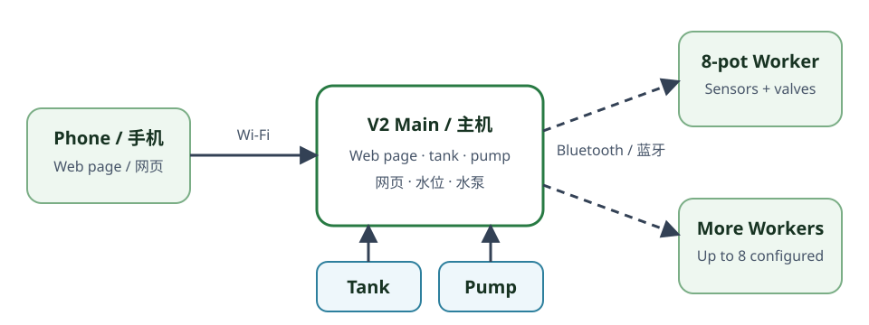
2. Hardware and channel mapping
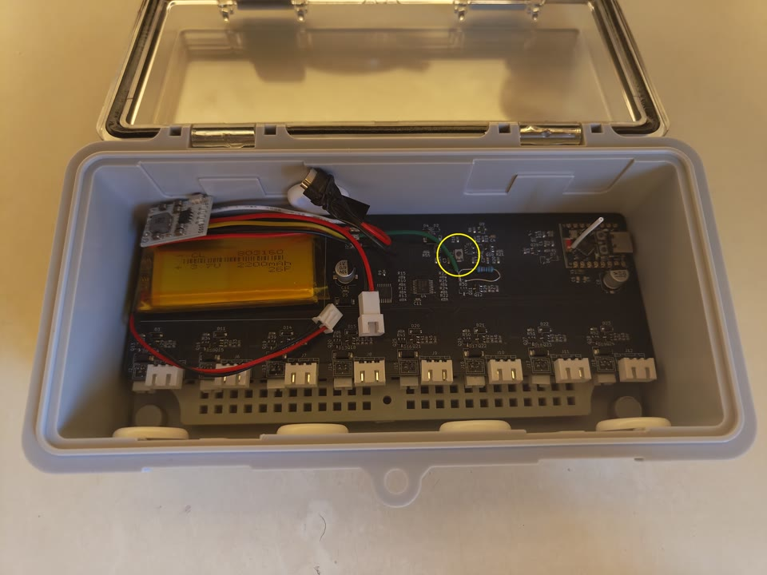
The worker contains a rechargeable battery, built-in USB-C charging section, its control board, eight soil-sensor connections, and eight valve connections. Use the supplied common Soil Moisture Sensor V2.0 design and only the valves verified and supplied by the project owner. The worker reads the sensors through one shared circuit and opens valves one at a time to limit electrical load and water flow.
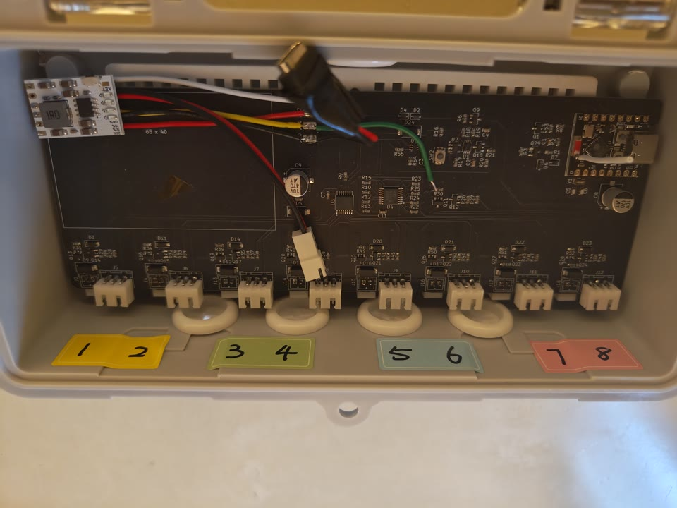
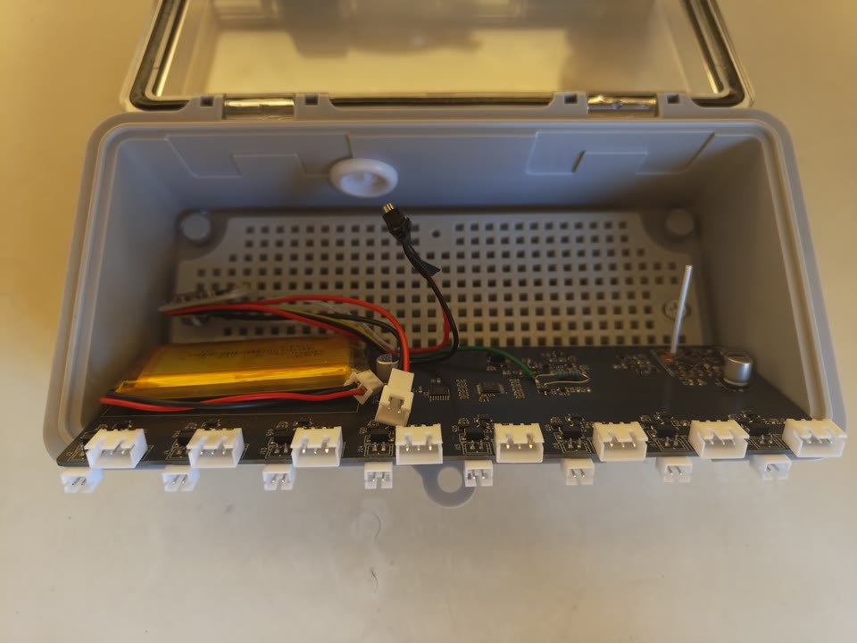
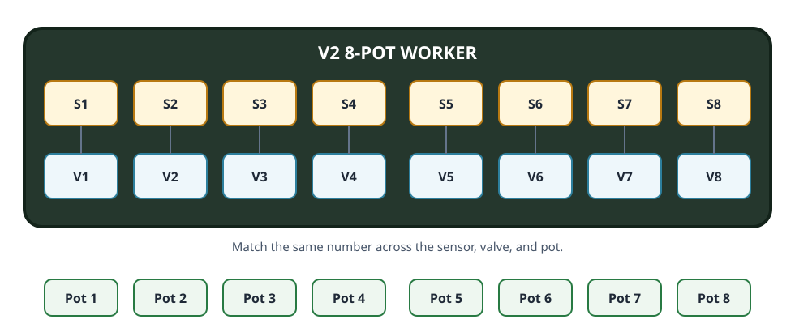
3. Installation
- Place the worker above possible spill level in a dry, ventilated location close enough for all eight sensor and valve cables. Keep its antenna area away from metal, the battery, and standing water.
- With battery and charger disconnected, assign each plant a permanent channel number from 1 through 8.
- Install each Soil Moisture Sensor V2.0 at a consistent depth, away from the pot wall and direct watering outlet. Insert it only up to the white line shown below. Do not bury the sensor board, exposed electronics, or cable joints.
- Connect each sensor to the matching sensor channel using the confirmed polarity and orientation.
- Install the matching supplied valve in the water line. Connect port A to the water input, port B to the tube for that plant, and port C to the next valve or the return tube to the water tank. Connect its cable to the same-numbered valve channel.
- Insulate every extension-cable joint, the sensor-board connector area, and the valve's electrical parts as shown below. Secure tubing and wiring so a leak cannot run toward any connector, board, battery, or charger.
- Connect the approved battery, then follow Section 4. Test one channel at a time from the main controller before enabling automatic watering.
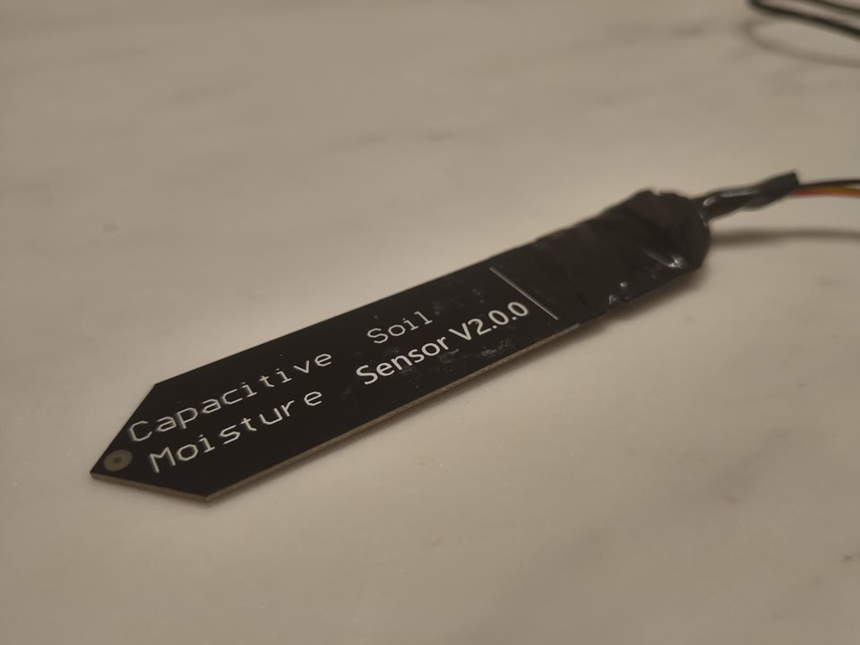
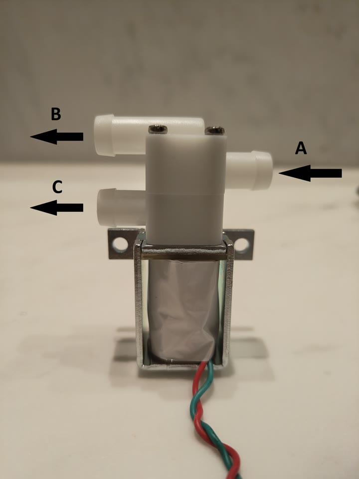
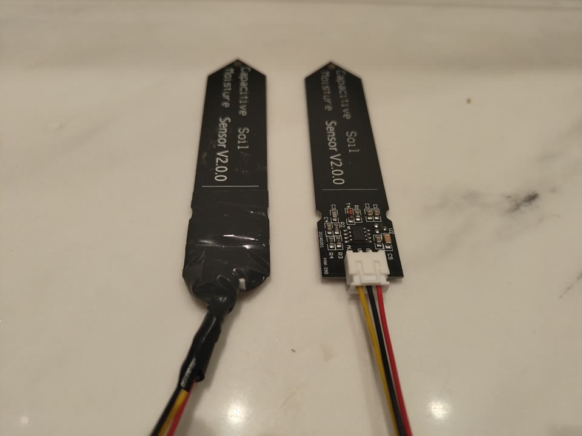
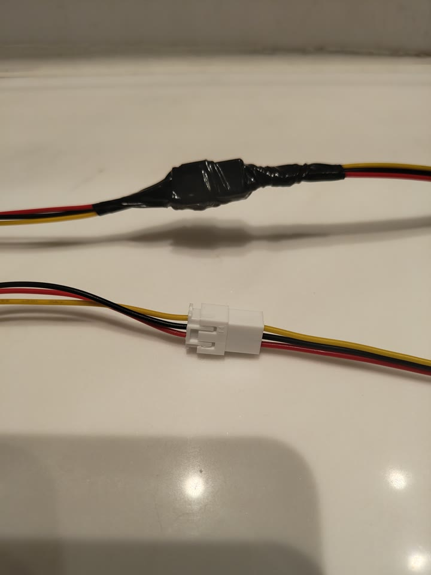
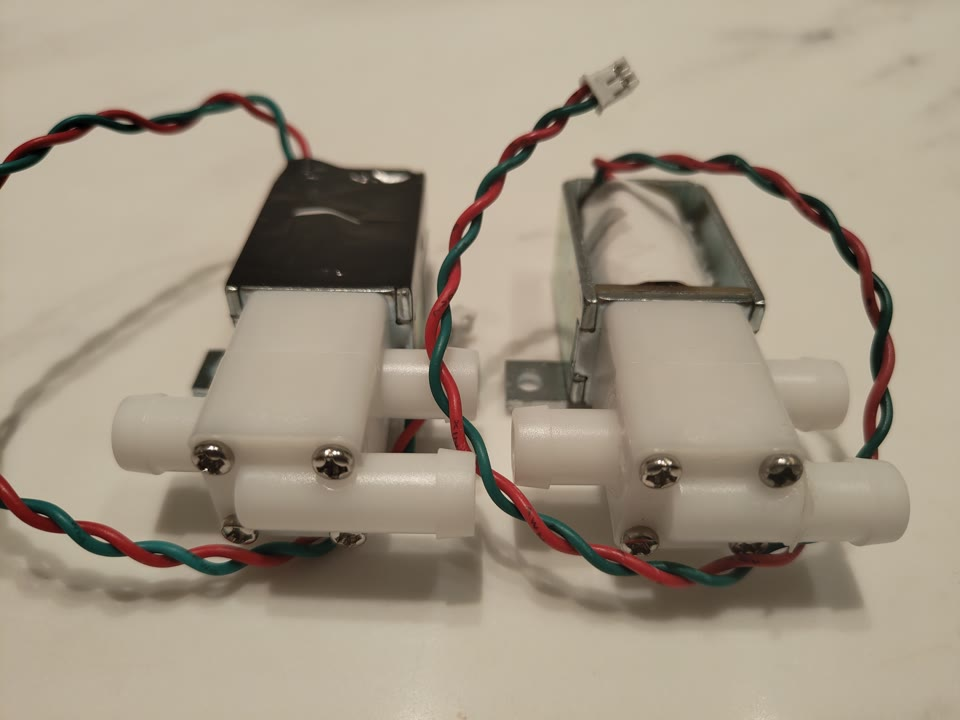
4. Power-up and pairing
First association
- Charge the included battery if needed, then press the power button once to turn on the worker.
- Observe startup. The red power light remains on and a normal worker begins sensor reading; its blue status light flashes twice during a reading cycle. A repeating three-flash blue-light fault is described in Section 6.
- Read the worker's 12-character Bluetooth device ID from the label on the outside of its case. The main-controller page calls this a MAC address. It uses only numbers 0–9 and letters A–F.
- On the main controller, leave Auto Mode off. Enter the device ID in Add Worker and optionally assign a name.
- Wait through at least one contact interval, normally about 30 seconds. The first valid instruction links the worker to that main controller.
- Confirm that eight pots, battery percentage, time since last contact, signal strength, and soil readings appear. Test all channels under supervision.
Move a worker to another main controller
Remove it from the old main controller first. If it receives nothing from that controller for about five minutes while awake, it forgets the old link and becomes available for setup again. Completely disconnecting and reconnecting the battery also clears the remembered link. Add it to the new main only after one of these actions.
5. Normal operation
| Condition | Worker behavior |
|---|---|
| Not yet linked | Reads sensors and battery, then makes itself available to a main controller about every 10 seconds during setup. It does not accept watering instructions meant for another device. |
| Main in manual mode | Stays awake, waits about five seconds after one sensor-reading cycle before starting the next, and remains ready for contact, valve tests, or update preparation. Including measurement time, a full cycle repeats roughly every seven seconds. This gives quick control but uses more battery. |
| Main in Auto Mode | Wakes at the planned time, answers the main controller with new readings, opens selected valves one at a time, confirms when finished, then enters timed low-power sleep when instructed. |
| No contact from the main for about five minutes while awake | Forgets the main controller and becomes available for setup again. |
Sensor and valve behavior
- Each sensor-reading cycle checks the battery first and then all soil channels. While awake, the worker waits about five seconds after that work before starting the next cycle; including measurement time, the normal light pattern repeats roughly every seven seconds.
- Higher soil readings mean drier soil.
- A watering command can select several pots, but the worker operates their valves one at a time for each configured duration.
- Battery sampling is deferred while valves are active and briefly after they turn off, so the displayed battery value may not change immediately during watering.
- The worker enters sleep only after it has told the main controller that the task is complete.
6. Worker LED
The worker has a red power light that remains on while the worker is powered. Its controlled blue status light shares an electrical connection with the circuit that selects soil sensors. For this reason, the blue light also flashes as sensors are read and is not a general-purpose status light. All patterns below refer to the blue light.
| Appearance | Meaning | Action |
|---|---|---|
| Two medium flashes, each about 0.4 seconds, with about 0.4 seconds between them; repeats roughly every 7 seconds while awake | Normal sensor reading. This timing is an estimate and may shift slightly while the worker is busy. | No action. |
| Three quick flashes every 2 seconds for 1 minute | A small clock part used for low-power timing did not start correctly. | Allow the automatic retry. If the pattern returns, power down and have the worker inspected. |
| Light stays off for about 5 seconds after the one-minute fault pattern | The worker is taking a short recovery sleep before it tries the clock part again. | Do not treat this dark period as a successful startup; wait for the next result. |
A successful clock check has no separate success flash. The normal two-flash sensor pattern can begin afterward.
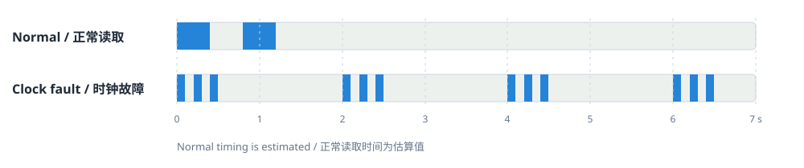
7. Battery and charging
Battery and power button
- The worker uses a 3.7 V rechargeable lithium-polymer battery.
- The included battery is 2200 mAh and uses a 2-pin XH2.54 connector. Any approved replacement must be a 3.7 V lithium-polymer battery rated at least 1500 mAh, with the same connector and wire polarity as the supplied battery.
- The battery is taped to the circuit board. Do not pull, puncture, bend, or pry it away from the board.
- Press the power button once to turn the worker on. Press it once again to turn the worker off.
Treat the displayed battery percentage as an estimate, not an exact remaining-time promise. Watch the trend over several updates and charge before a long unattended run. An unexpected large drop can also mean the battery or its connection needs inspection.
A displayed battery level of about 3% or lower causes the worker to shut down to protect the battery. Charge it, then press the power button once to turn it on again.
USB-C charging
- Use a charger rated for 5 V and at least 1.5 A. Connect it to the USB Type-C port exposed on the back of the case; the charging module is already built into the worker.
- The worker may remain switched on and operating while charging.
- The charging section has four red charge-level lights. They illuminate during charging; all four are on when charging is complete.
8. Worker software update
The main-controller webpage calls this Firmware Update. “Firmware” simply means the software stored inside the device. Worker updates are started from the V2 main controller; the worker has no upload page of its own.
- Charge the worker and place it near the main controller. Maintain stable power to both devices.
- On the main controller, turn Auto Mode off and wait until the system is neither watering nor checking workers.
- Open Firmware Update. Under Worker Firmware, upload the correct worker update file ending in
.ota. - In the worker list on that page, select Update for this worker.
- Wait through checking, connection, transfer, verification, reboot, and reconnect. Do not disconnect the battery.
- Confirm that the main controller reports the new worker software version.
The file must be for the correct worker model, must not be damaged, and must have an allowed software version. The installed version and versions below the allowed minimum are rejected.
9. Maintenance
- Inspect the battery regularly for swelling, heat damage, abrasion, or moisture.
- Check every cable and connector for corrosion, looseness, crushed insulation, and strain.
- Inspect tubing and valve bodies for leaks, deposits, blockage, and incorrect port routing.
- Clean soil-sensor surfaces gently and recalibrate after moving a sensor, changing soil, repotting, or replacing a battery/sensor.
- Compare delivered volume per channel periodically; tubing length and deposits can change flow.
- Before storage, disconnect water, switch the worker off, and follow the battery supplier's lithium-polymer storage and temperature guidance.
10. Troubleshooting
| Symptom | Checks |
|---|---|
| Worker does not appear on the main | Confirm battery/power, exact 12-character Bluetooth device ID, range, and that Auto Mode is off. Wait through at least one 30-second contact interval. |
| Worker was used with another main | Remove it from the old main, then leave it awake without old-main communication for about five minutes or completely power-cycle its battery before adding it to the new main. |
| Updates arrive only after a long delay | The worker may be in low-power sleep. Its wake time follows the main controller's Data sync interval. Turn Auto Mode off while checking the problem. |
| Sensor says Not Connected or is implausible | Power down, reseat the matching sensor connector, check orientation/cable damage, ensure exposed electronics are not buried, then compare against another known-good sensor. |
| Wrong plant is watered | Stop the pump. Use the connector-number photograph and verify that Sensor N, Valve N, displayed Pot N, and physical plant N all match. |
| Valve does not operate | Check worker sync, battery level, connector seating/polarity, correct 5 V valve, tubing direction, and configured duration. Test only with Auto Mode off and supervision. |
| Battery shows very low or worker shuts down | Stop valve tests, inspect the battery, and charge it through USB-C. Press the power button once to turn it on again. |
| Three-flash fault repeats | The clock part used for low-power timing is not starting correctly. Power down and have the worker inspected; normal sensor activity is two medium flashes, not this repeating three-flash sequence. |
| Software update fails | Charge the worker, move it closer, turn Auto Mode off, wait until the main controller is idle, and verify that the file is for the correct worker model and software version. |